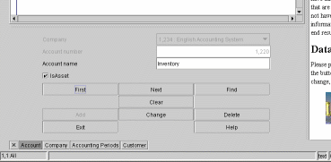
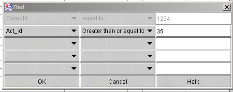

The Lazy8 Ledger Tutorial

Lesson: Navigation - editing/showing/finding records
This describes how to navigate through the database using the data
entry forms. Below is an example of the data entry form for Accounts.

All these data entry forms are at the bottom of the main window. Notice in the
picture above that 'Account' is highlighted among the buttons at the bottom
of the page. It was this button I pushed to show this account window. For the
purposes of this lesson, I could have chosen any of the buttons there at the bottom
of the screen because they all work very similar.
Data Entry Buttons
These buttons will allow you to move between records and do any type of
entering or deleting of records.
First
If you want to go through the list of already entered data, this button
must be the first pressed (alternately you can press FIND described below).
This button will take you to the very first record in the entire database.
If there are no records then after pressing this button you will see a
blank form.
Next
This button can only be used after FIRST or FIND. This button will
take you to the next record in the database. If you have gone through
all the records in the database, then pressing this button will show a
blank form. You must then press either FIRST or FIND to go throught
the list again
Find
With this dialog you kan specify critera för searching in the database.
You may be shown one or several rows of fields to choose from . If
you leave the center column in its default position then that field is
not used in the search. Choose a comparison type in the center column
and then the comparison data in the right hand column and a field to search
on in the left hand column.

Press OK when done. When you return to the main form,
you need to press NEXT to get the
next record in the list
Clear
This button will simply clear the form. You might need to do this
to make it easier to enter new data into the form but this button is not
normally necessary to use.
Add
After you have entered new data, then you must press this button to enter
the data into the database permanently.
Change
After you have used the FIRST, FIND, NEXT buttons to show a specific record,
you can then make changes in the record and press this button to enter
the changes in the record.
Delete
After you have used the FIRST, FIND, NEXT buttons to show a specific record,
you can use this button to delete the record you see. Deleteing records
can have severe consequences. A record may be linked to other records
and deleting the record will permanently break the link thus ruining the
records it was linked to .
Exit
This will exit this form
Help
This will take you to the appropriate help information
Copyright
2002 Lazy Eight Data HB